14 ML Monitoring
14.1 Stuff I haven’t organized
{kind=link}
- articles
- Example: RStudio Connect and {pins} (article)
- Deploy a model as a RESTful API using Plumber
- Create an R Markdown document to regularly assess model performance by:
- Sending the deployed model new observations via httr
- Evaluating how the model performed with these new predictions using model metrics from yardstick
- Versioning the model metrics using the pins package
- Summarize and visualize the results using flexdashboard
- Schedule the R Markdown dashboard to regularly evaluate the model and notify us of the results
- Misc
- DL Monitoring points
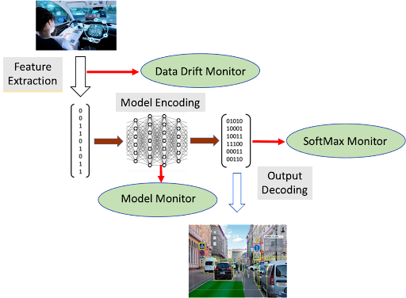- Data Drift Monitor and SoftMax Monitor (i.e. monitor prediction metrics) are typical of any monitoring system
- Model Monitor is an auxiliary model (or models) trained to recognize basic patterns that emerge in the baseline operations of the primary model.
- Example: monitor the values of normalized outputs of various layers within the model.
- These values could be input to a neural network trained to distinguish the patterns of normal operation from out-of-range examples included in the training set. This model monitor could then flag potential drift during operation of the primary system
- Example: monitor the values of normalized outputs of various layers within the model.
- If predictions result in an intervention, it will be difficult to determine drift.
- Example: patient is determined to be at high risk by a model, gets treated by clinician, and lives. Was this a false positive by the model or was the model correct and the reason for the patient living is the clinician’s intervention.
- Other tracking
Number of alerts triggered by model
- Work with users to minimize false positives and hence unnecessary alerts. Otherwise model alerts might be treated as the boy that cried wolf and will be ignored or taken less seriously.
Interventions after a trigger
- This will let you know if your model predictions are being adhered to
- Example: model that predicts a patient is at high risk of death and triggers an alert to a clinician
- Part of the standard protocol for intervening after a patient is labelled high risk is to perform additional vitals measurements. The number of vitals measurements for a patient are recorded, so this metric can be used a proxy. If there is an increase in a high risk patient’s vital measurments, then the data team can infer that it’s model’s alerts are being adhered to.
Automated Retraining Triggers
- Requirements:
- The number of models in production is limited so retraining costs are low.
- Retail, logistics, etc. may involve thousands of related (e.g geography) models
- The frequency of triggering events is rare.
- There are no strict requirements on model availability.
- The number of models in production is limited so retraining costs are low.
- Requirements:
Predicting model drift
- Important, so:
- SLA requirements related to model availability can be met.
- Analysis can be done on such cases for root cause analysis in pre-production settings.
- Computational requirements for retraining can be calculated in advance knowing the frequency and prevalence of these events across the models.
- survival analysis to model performance decay in predictive models.
- Data requirements:
- Sufficient historical scoring data is available on 1 model
- Or scoring data is on a large number of closely related models
- Once you have the probability of survival distribution, you can could use the 95th percentile survival time to trigger a model retrain to ensure that the model degradation is below the performance threshold with the specified probability
- Data requirements:
- Important, so:
Model calls
- If model usage drops or becomes irratic, it could be a signal something is wrong
- Only useful for frequently used apps
- Depending on the model environment, you might want to check requests and responses separately.
- Was the model not asked (e.g., because a recommendation widget crashed) or failed to answer (e.g., the model timed out and we had to use a static recommendation instead)? The answer would point to where you should start debugging.
Competitor feature distributions
- Would be useful in diagnosing if the changes in data are just your company or happening to the industry sector
SHAP for Drift Detection: Effective Data Shift Monitoring Feeds distribution of SHAP values into a logistic regression, then applies ks test on probability predictions for Y==1, Y==0
Measuring Precision and Recall
- Actions taken by model
- Soft Actions - Events are flagged for humans to take action
- Hard Actions - Events are flagged and actions are automatically taken by an algorithm
- Precision: ratio of positive predictions that are correct (Precision = TP / (TP + FP))
- Soft Action models - Record human decisions that are made on the flagged events
- Hard Action models - Set up a control group: for a fraction of the volume, let a human decide, instead of your model. Then the precision in the control group is an estimate of the precision of your model
- Recall: ratio of all positive events that the model is detecting (Recall = TP / (TP + FN))
- Need to audit your negative predictions to count the number of False Negatives (FN)
- Issue: Imbalanced classes (e.g. fraud model)
- If recall is expected to be 99.9%. That means that, on average, you’d need to audit at least 1K negatives per day just to find just one false negative, and even more for that number to be statistically meaningful.
- Solution: Importance Sampling (Google blog post)
- Sample negative predictions based on their model scores
- Sample more heavily from datapoints with high model scores because that’s where we expect most of our false negatives to be
- Actions taken by model
- If you are dealing with a high-risk domain, it is best to design model fallbacks from the get-go in case of model failure from broke code, concept drift, etc.
- Examples
- Make a human do what the model was doing (e.g. insurance claims processing, manufacturing quality control, or sales lead scoring)
- Rule-based approach: You can often design a set of rules or heuristics that will be less precise but more robust than a rogue model. (e.g. simply show the most popular items to all customers)
- Examples
- Notes from https://blog.anomalo.com/effective-data-monitoring-8bce3ddf87b4
- All the stuff that platform, Anomalo, does
- Identifying issues and retraining models will minimize losses
- deviations between baseline and production distributions
- feature and cohort performance
- ML transparency regulation requires it to understand why a model made a particular prediction to ensure broader governance, fairness, and mitigate bias
- Keep track of predictions by group
- Dynamic testing can prevent false positives/negatives
- Use a forecasting method to generate prediction intervals. If data values for a variable fall outside the PIs, then a data quality alert is triggered
- Limiting tests to the most recent data can reduce data warehouse costs
- Create application (or subscribe to a service) that enables a user to adjust commonly changed rules/thresholds without writing code
- Should be well documented
- The types of changes users often make include:
- Widening the expected range for a data outcome
- Narrowing the scope of a rule using a where SQL clause
- Waiting for updated-in-place data to arrive before applying a rule
- Changing thresholds for machine learning alerts
- easy reversion to prior state
- so will need a log/versioning
- For data that is critical. Checks should be included in the pipeline
- If a check does fail, you could run automated tasks to fix the bad data, abort the remainder of the DAG (sometimes, no data is better than bad data), or quarantine bad records using SQL produced in the API to query for good and bad data.
- If you have hundreds of variables, managing data quality rules for each column may be untenable.
- Use unsupervised data monitoring
- no increase in NULL values
- A constrained model looking for significant increases in NULL values
- no anomalous records
- machine learning algorithm, which identifies changes in continuous distributions, categorical values, time durations, or even relationships between columns
- score severity of anomaly somehow
- no increase in NULL values
- Use unsupervised data monitoring
- Route alerts (slack) for a particular table only to teams that regularly use or maintain that table
- As alerts arrive, they can use emoji reactions to classify their response to alerts. Common reactions include: * ✅ the issue has been fixed * 🔥 an important alert * 🛠️ a fix is underway * 🆗 expected behavior, nothing needed * 👀 under review
- Alerts should have contextual information
- Example
- Why does this alert matter?
- What # and % of user_id values are affected?
- How often has this alert failed in the recent past?
- Who configured this alert, and why?
- What dashboards or ML models depend on fact_table?
- What raw data source contributed user_id to fact_table ?
- Include image with a row with a value that triggered the alert and a row that has a valid value
- Example
- Root cause analysis
- Uses statistical method to find out where the issue is
- group_by(cat) %>% summarize(pct_bad = … whatever)
- permute rows of anomalous column and see where there’s a relationship change between anomalous column/rows and other columns. The columns where the relationship changes might be potentially involved in the anomalous values of the permuted column
- clustering or correlation?
- Uses statistical method to find out where the issue is
- Get user feedback on alerts (useful or not useful?)
- DL Monitoring points
- Ground Truth Latency - how long does it take to know if your prediction was right
- Realtime/near realtime
- stocks, gambling, food delivery time estimates, digital advertising
- Able to determine whether there’s an issue with your model almost immediately
- delayed
- credit card fraud
- Requires monitoring of proxy metrics (metrics that are associated with the ground truth) until ground truth arrives
- Realtime/near realtime
- Problematic ground truth types
- Biased
- Example: loan default model
- The ground truth only includes results from customers who were approved for a loan. So there’s no information about whether a person who was denied a loan would’ve repaid it back or not
- Solution: An occasional A/B test where a group of customers applying for the loan isn’t subject to model predictions of whether they’re credit worthy or not (control group) and a group that is subject to model predictions (treatment group)
- Example: loan default model
- Little to zero or sporadic ground truth feedback
- Requires monitoring of proxy metrics (metrics that are associated with the ground truth)
- Manual collection of ground truth data
- can be expensive but high quality ground truth data is very important
- Biased
- data required for monitoring
- If customer facing, then the data should that which is necessary to calculate service level indicators (SLI) which will help the company keep its customer obligations which are outlined in the service level agreement (SLA) (see link for more details)
- Types
- Unique Id per request provided by the system that called the ML model. This unique identifier will be stored with each log and will allow us to follow the path of a prediction before, during and after the ML model.
- Input features before feature engineering
- Input features after feature engineering
- Output probabilities
- Predicted value
- Data size required to be able to measure a metric accurately
- How many observations do I need so that I know the metric I’m measuring is accurate.
- Depends on metric and threshold for the accuracy of that metric.
- Example:
- classification with imbalanced dataset, 1/100 is a positive event
- Recall = 90%
- The model should get 90% of all true positive correct
- Threshold (aka shot noise) = 0.1%
- The maximum error in measuring recall is 0.1%. So, a model with 90.0009% recall would trigger a model retrain
- shot_noise <- ((pos_rate * data_size) * (1-recall)) / data_size
- I don’t see how to solve this for data_size (i.e. data_size cancels out) so I guess this is an optimization problem
- Changes in the distribution of input and output features
- Triggers for retraining model (if possible, use both)
- using performance based triggers is good for use-cases where there is fast feedback and high volume of data, like real time bidding, where you are able to measure the model’s performance as close as possible to the time of predictions, in short time intervals and with high confidence (high volume).
- The main limitation when relaying on performance only, is the time it takes for you to obtain your ground truth — if you obtain it at all. In user conversion prediction cases, it can take 30 or 60 days until you will get a ground truth, or even 6 months or more in cases such as transaction fraud detection or LTV. If you need to wait so long to have full feedback, that means you’ll retrain the model too late, after the business has already been impacted.
- By measuring changes in the input data, i.e. changes in the distribution of features that are used by the model, you can detect data drifts that indicate your model may be outdated and needs to be retained on fresh data.
- Missing values can occur regularly at ML model inference. Even when missing values are allowed in features, a model can see a lot more missing values than in the training set. An example of a missing value error is an ML model making an inference based on a form input where a previously optional field is now always sending a null value input due to a code error.
- Range violation happens when the model input exceeds the expected range of its values. It is quite common for categorical inputs to have typos and cardinality mismatches to cause this problem, e.g. free form typing for categories and numerical fields like age, etc. An unknown product SKU, an incorrect country, and inconsistency in categorical values due to pipeline state are all examples of range violation.
- Type mismatch arises when the model input type is different from the one provided at inference time. One way types get mismatched is when column order gets misaligned during some data wrangling operations.
- using performance based triggers is good for use-cases where there is fast feedback and high volume of data, like real time bidding, where you are able to measure the model’s performance as close as possible to the time of predictions, in short time intervals and with high confidence (high volume).
- Triggers for retraining model (if possible, use both)
- Track distance metrics between reference variable distribution and a production variable distribution
- The production variable distributions should include feature variable data entering the pipeline and prediction output from the models
- Upward trends in the distance between baseline and operational data distributions can be the basis of data drift detection.
- Potential reference distributions (i.e. monitoring window)
- a distribution across a fixed time window (distribution doesn’t change). Examples:
- training distribution
- validation/test set distribution.
- initial model deployment distribution (or a time when the distribution was thought to be stable)
- a distribution across a moving time window (distribution can change)
- last week’s input data with this week’s input data
- Considerations
- Representation differences: Class ratios across windows may not be the same (e.g., the fraction of positives in one window may be very different from the fraction of positives in another window).
- Varying sample sizes: The number of data points in each window may vary (e.g., the number of requests received on a Sunday is less than the number of requests received on a Monday).
- Delayed feedback: Due to reasonable events (e.g., loss of Internet connection), labels may come in at a lag, making it impossible to factor in predictions without a label into the current window’s evaluation metric.
- a distribution across a fixed time window (distribution doesn’t change). Examples:
- Track predictions by group (cohort performance)
- Drift may impact groups differently.
- e.g. persons with high net worth, low FICO scores, recent default, etc.
- Groups that are very important to the company should be tracked at the very least.
- Makes misclassified or poorly predicted observations exportable, so they can be studied further
- maybe version these
- Drift may impact groups differently.
- Other stuff to track
- Number of predictions made
- Prediction latency — How long it takes to make a prediction
- If the product is customer facing, then customer satisfaction/usage type metrics should also be tracked
- Thresholds
- See Automating Data Drift Thresholding in Machine Learning Systems
- Author was lame. He coded the impractical solution and didn’t code the good solution.
- Computationally intensive method (may not be practical)
- Bootstrap or MC simulate the feature at the size of the production dataset or whatever the amount of data you’re going to test for drift
- For each simulation, measure the drift (e.g. PSI, JS Divergence) between the simulated dataset and the training dataset.
- Threshold = mean(drift) of all the simulations If any production/inference dataset has a drift > threashold then that should trigger an alert
- Closed method for PSI
- Supposedly can be calculated for other distance measures.
- Final Solution for the threshold 🥴
.png)
- K is the number of bins (numeric) or levels (categorical)
- Pk is the percentage of total training observations == level_K or the percent of total training observations in bin K
- αk = 1 + Nq + Pk
- Nq = sample size of the production/inference set, Q. So it should be a constant for all K.
- He used lower-case pk here instead of Pk, but my understanding was that they were the same thing. May want to double check that.
- Ψ is called the digamma function. Will need to look that one up.
- See Automating Data Drift Thresholding in Machine Learning Systems
{kind=link}
14.2 Distribution Distance Metrics
- Also see this article for examples of computing wasserstein (aka Kantorovich) distance in R, py, Julia.
- Packages
- {philentropy} has a ton of distribution distance measures + some helper functions, Docs
- {{cinnamon}} LIB handles py models and calculates wasserstein and kolmogorov-smirnov
- {KSgeneral} can perform KS tests between continuous, mixed, or discrete distributions
- See Distributions >> Tests for more details on kolmogorov-smirnov
- Paper: Two-sample KS test with approxQuantile in Apache Spark provides code that uses Spark’s
approxQuantileto perform a (currently) unavailable 2-sample KS test in Spark for big data situations.
- Population Stability Index (PSI)
Formula
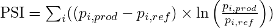- i ∈ length(bins)
- p is the percent of total observations in bin i
- ref is the reference variable
- prod is the production variable
Misc
- Notes from
- Often seen in the finance industry
- For both numeric and categorical features
- Sometimes referred to as Characteristic Stability Index (CSI) when used on predictor variables
Steps
- Divide the reference variable variable range into 10 bins (arbitrary but seems to be common) or however many bins you want depending on how fine a resolution you want.
- For categorical variables, the levels can be used as bins or levels can be collapsed into fewer bins
- Continuous
- Slicing the range of the reference variable into sections of the same interval length
- Slicing the reference variable into quantiles where each bin has the same number of observations
- Count the number of values in each of those bins.
- Divide each bin count by the sample size to get a percentage
- Repeat for the production variable
- Calculate PSI
- Divide the reference variable variable range into 10 bins (arbitrary but seems to be common) or however many bins you want depending on how fine a resolution you want.
Guidelines Also see Thresholds section above from https://scholarworks.wmich.edu/cgi/viewcontent.cgi?article=4249&context=dissertations
.png)
- N is reference sample size and M is production sample size (although it’s symmetric so doesn’t matter which you column/row you use for each)
- B is the number of bins used.
- Cells have the PSI values for 95% level significance
- PSIs >= the appropriate cell value can reliably be interpreted that a shift in the variable distribution has occurred.
- See paper tables in Appendix B for other significance levels and B values. Can also use a chisq distribution.
Example: model predictions
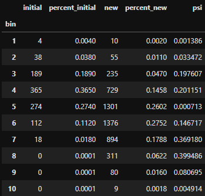
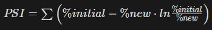- Equation is slightly different but may be equivalent
- initial - model predictions that are used as a reference (e.g. predictions from when current model first went into production)
- new - current model predictions
- Average PSI is used to represent the model
- Guidelines
- PSI < 0.1 = The population hasn’t changed, and we can keep the model
- 0.1 ≤ PS1 < 0.2 = The population has slightly changed, and it is advisable to evaluate the impacts of these changes
- PSI ≥ 0.2 = The changes in population are significant, and the model should be retrained or even redesigned.
- Equation is slightly different but may be equivalent
Example from arize ai (model monitoring platform)
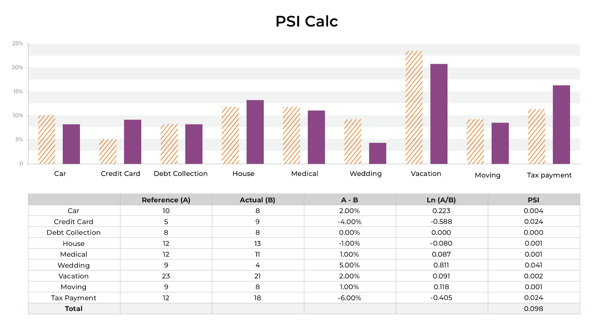- A comparison in the distributions of how a person spent their money this last year as compared to the year prior
- Y-axis represents the percentage of the total money spent in each category, as denoted on the X-axis.
- Steps
- Calculate the difference in percentage between the reference distribution A (budget last year) and the actual distribution B (budget this year)
- Multiply that difference by the natural log of (A %/ B%)
- The larger the PSI, the less similar your distributions are.
- You can set up thresholding alerts on the drift in your distributions.
- A comparison in the distributions of how a person spent their money this last year as compared to the year prior
- Jensen-Shannon Divergence
Misc
- Notes from https://docs.aws.amazon.com/sagemaker/latest/dg/clarify-data-bias-metric-jensen-shannon-divergence.html
- Also see How to Understand and Use the Jensen-Shannon Divergence (Haven’t read but looks more in-depth)
-
- Where pmix = 0.5(pref + pprod) and
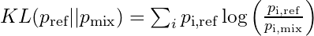- i ∈ length(bins)
- p is the percent of total observations in bin i
- Similar for KL(pprod || pmix)
- Where pmix = 0.5(pref + pprod) and
- Steps: Same preparation steps as with the PSI distance metric (binning, proportions, etc.)
- Symmetric version of K-L divergence ( see Information Theory >> K-L Divergence) which means it satisfies the triangle inequality which means it’s a true distance metric
- fyi using log2 means KL is in units of “bits” and using ln means KL is in “nats”
- The range of JS values for binary, multicategory, continuous outcomes
- Using ln, JS ∈ [0, ln(2) ≈ 0.693]
- Using log2, JS ∈ [0, 1] Values near zero mean the labels are similarly distributed.
- Positive values mean the label distributions diverge, the more positive the larger the divergence.
- Supposedly the usage of the mixture reference makes this an unstable metric for using a moving window. It makes the JS score not comparable to past values.
- Seems like all moving window reference distributions, mixed or not, will have some variability to it, but maybe this produces extra variability that makes it unreliable.
- Other measures
- Kullback-Leibler Divergence (KL Divergence)
- Wasserstein’s Distance
{kind=link}
{kind=link}
{kind=link}
14.3 Data Drift Architectures
Example: How to Build a Fully Automated Data Drift Detection Pipeline
- Uses Kestra for orchestration
- Example relies on scheduled data pulls for detecting drift. Kestra can make use of Graphana to create a real-time detection pipeline.
{kind=link}
14.4 NLP monitoring
- Notes from Monitoring NLP models in production
- Descriptive Statistics
Features: length of text, out-of-vocabulary (OOV) words %, and the share of non-letter character %
Example: {{evidently}}
column_mapping = ColumnMapping() column_mapping.target = 'is_positive' # binary target column_mapping.prediction = 'predict_proba' # predicted probabilities column_mapping.text_features = ['review'] # text feature data_drift_report = Report( metrics=[ ColumnDriftMetric('is_positive'), ColumnDriftMetric('predict_proba'), TextDescriptorsDriftMetric(column_name='review'), # text feature ] ) data_drift_report.run(reference_data=reference, current_data=valid_disturbed, column_mapping=column_mapping) data_drift_report- Stat tests on distributions are performed (e.g. K-S test) with p-values given
- Other drill down charts are provided if drift is detected
- Domain Classifier
- {{evidently}}
Builds a binary classifier model to predict with the text feature data came from the reference dataset (1) or the current dataset (0)
The ROC AUC of the binary classifier shows if the drift is detected. If a model can reliably identify the samples that belong to the current or reference dataset, the two datasets are probably sufficiently different.
Can be biased if there are time related text (e.g. month names or dates)(makes it easier for the classifier), but these can be detected by looking at feature importance plot and looking for date/time related tokens
If drift is detect, you can drill down further
- Typical words in the current and reference dataset - These words are most indicative when predicting which dataset a specific review belongs to.
- Examples of texts - from current and reference datasets that were the easiest for a classifier to label correctly (with predicted probabilities being very close to 0 or 1).
Example
data_drift_dataset_report = Report(metrics=[ ColumnDriftMetric(column_name='review') ]) data_drift_dataset_report.run(reference_data=reference, current_data=new_content, column_mapping=column_mapping) data_drift_dataset_report
- {{evidently}}
- Invariance testing
- Tests whether an ML model produces consistent results under different conditions
- See {{behave}}, Write Readable Tests for Your Machine Learning Models with Behave
- Example
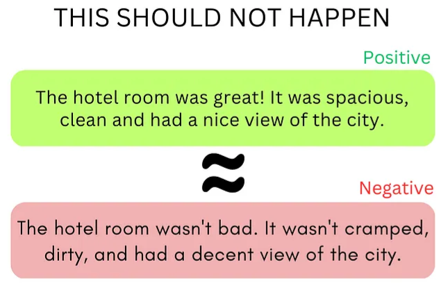
- Directional Testing
- Statistical method used to assess whether the impact of an independent variable on a dependent variable is in a particular direction, either positive or negative.
- For NLP, this test checks whether the presence of a specific word has a positive or negative effect on the sentiment score of a given text.
- See {{behave}}, Write Readable Tests for Your Machine Learning Models with Behave
- Example
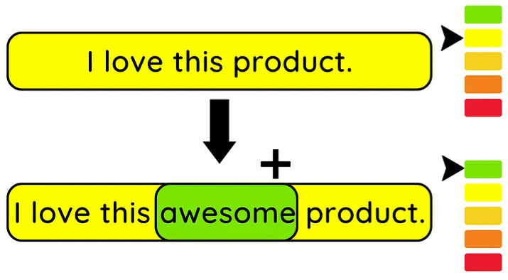- Sentiment score should increase due to the new word’s (“awesome”)_ presence
{kind=link}
{kind=link}
14.5 Investigating Data Drift
- If feature distributions change, it may be something else besides a true data generating process (dgp) shift.
- Check for pipeline: code infrastructure, processing, data sources, hardware, and input model issues. (see below for details)
- If it’s not a data quality, then is it concept drift or data drift?
- Data Drift
- Distributions change but relationships between features remain
- Concept Drift
- Distributions might remain similar, but the relationships change instead: in between the features, or between the features and the model output.
- Data Drift
- Questions
- Which features are drifting?
- How strongly?
- May require domain expert to determine whether there are substantial changes in associations
- What’s the process behind it?
- Examples
- A change in the socio-economic relations, such as inflation, diseases, or political changes;
- Unaccounted events, such as holidays, world cups, or even natural disasters;
- The entrance of a new competitor in the market, and/or the shift of customers;
- Changes in the offered product, or the marketing campaign.
- Examples
- Actions
- Data Pipeline: fix it
- Data Drift:
- low to moderate: leave it alone and see if the model handles it or gets worse
- high or meaningful: retraining the model should suffice
- Concept Drift: Model predictions should suffer, so a complete overhaul (EDA, algorithm selection, production tools, etc.) might be necessary.
- Additional actions (may need if new labels/target variable data isn’t immediately available)
- Take the component of the application that uses the model offline (e.g remove recommendations for website)
- Make a human do what the model was doing (e.g. insurance claims processing, manufacturing quality control, or sales lead scoring)
- Rule-based approach: You can often design a set of rules or heuristics that will be less precise but more robust than a rogue model. (e.g. simply show the most popular items to all customers)
- Add business logic or an adjustment on top of the model output
- Probably won’t generalize well so should be context specific
- Code infrastructure
- Wrong source - A pipeline points to an older version of the marketing table, or there is an unresolved version conflict.
- Lost access - Someone moved the table to a new location but did not update the permissions.
- Broken queries - These JOINSs and SELECTs might work well until the first complication. Say, a user showed up from a different time zone and a new category of time zone is in the data. Some queries might not hold up.
- Infrastructure update - You got a new version of a database and some automated spring cleaning. Spaces replaced with underscores, all column names in lowercase. All looks fine until your model wants to calculate its regular feature as “Last month income/Total income” with hard-coded column titles.
- Processing
- Broken feature code - For instance, the promo discounts were never more than 50% in training. Then marketing introduces a “free” offer and types 100% for the first time. Some dependent feature code suddenly makes no sense and returns negative numbers.
- Dealing with outliers and missing values
- Notes from https://towardsdatascience.com/why-data-integrity-is-key-to-ml-monitoring-3843edd75cf5
- Skip the prediction or have a back-up system — If the data is bad, the serving system can skip the prediction to avoid erroring out or making an inaccurate prediction. While this can be a solution when the model makes a large number of non-critical decisions (e.g. product recommendation), it’s not an option when it makes business or life-critical decisions (e.g. healthcare). In those cases, there needs to be a backup decision-making system to ensure an outcome. However, these backup systems can further complicate the solution.
- Impute or predict missing values — A key challenge of this approach is that it hides the problems behind the data issue. Consistently replacing bad data can shift the expected feature’s distribution (aka data drift) causing the model to degrade. A drift as a result of this data replacement could be very difficult to catch, impacting the model’s performance slowly over time.
- Set default values — When the value is out of range, it can be replaced by a known high or low or unique value, e.g. replacing a very high or low age with the closest known minimum or maximum value. This can also cause gradual drift over time impacting performance.
- Acquire missing data — In some critical high value use cases like lending, ML teams also have the option to acquire the missing data to fill the gap. This is not typical for the vast majority of use cases.
- Do nothing — This is the simplest and likely the best approach to take depending on the criticality of your use case. It allows for bad data to surface upstream or downstream so that the problem behind it can be resolved. It’s likely that most inference engines might throw an error depending on the ML algorithm used to train the model. A prediction made on bad data can show up as an outlier of either the output or the impacted input helping surface the issue.
- Data source
- new data formats, types, and schemas
- An update in the original business system leads to a change of unit of measurements (think Celsius to Fahrenheit) or dates formats (DD/MM/YY or MM/DD/YY?)
- New product features in the application add the telemetry that the model never trained on.
- There is a new 3rd party data provider or API, or an announced change in the format.
- The website being scraped changes urls or webpage format
- new data formats, types, and schemas
- Hardware
- Sensor breaks, Server goes down
- Data collection can stop or the data that’s collected could be corrupted
- Input model
- A model’s results that are used as inputs to another model
- Would need to determine if it was model drift or data drift
14.6 Model Drift
- Notes from
- Testing for drift
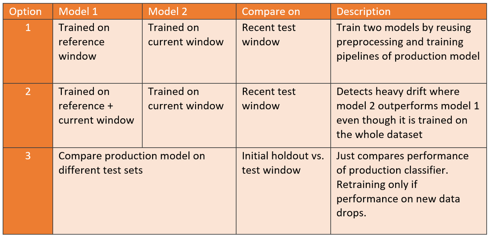- Option 1: You’ll already have a trained candidate ready for deployment if model 2 outperforms model 1.
- Example: An aggregated dataset consists of 45,000 timestamped observations which we spilt into 20,000 references, 20,000 current, and 5,000 most recent observations for the test.
- Score Models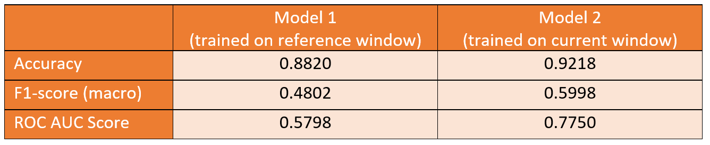
- The current model outperforms the reference model by a large margin. Therefore, we can conclude that we indeed have identified model drift and that the current model is a promising candidate for replacing the production model.
- Example: An aggregated dataset consists of 45,000 timestamped observations which we spilt into 20,000 references, 20,000 current, and 5,000 most recent observations for the test.
- Option 2: Will likely reduce false positives, at the expense of being less sensitive to drift.
- Option 3: Reduces unnecessary training cycles in cases where no drift is identified.
- Option 1: You’ll already have a trained candidate ready for deployment if model 2 outperforms model 1.
- Architectures
- Azure ML
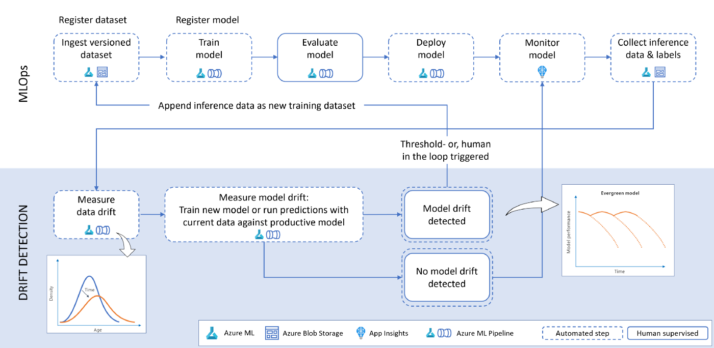- Ingest and version data in Azure Machine Learning
- For automation, we use Azure Machine Learning pipelines which consume managed datasets. By specifying the version parameter (version=“latest”) you can ensure to obtain the most recent data.
- Train model
- Model is trained on the source data. This activity can also be part of an automated Azure Machine Learning pipeline.
- Recommend adding a few parameters like the dataset name and version to re-use the same pipeline object across multiple dataset versions.
- By doing so, the same pipeline can be triggered in case model drift is present.
- Once the training is finished, the model is registered in the Azure Machine Learning model registry.
- Evaluate model
- Besides looking at performance metrics to see how good a model is, a thorough evaluation also includes reviewing explanations, checking for bias and fairness issues, looking at where the model makes mistakes, etc. It will often include human verification.
- Deploy model - Deploy a specific version of the model
- Monitor model - Collect telemetry about the deployed model.
- An Azure AppInsights workbook can be used to collect the number of requests made to the model instance as well as service availability and other user-defined metrics.
- Collect inference data and labels
- As part of a continuous improvement of the service, all the inferences that are made by the model should be saved into a repository (e.g., Azure Data Lake) alongside the ground truth (if available).
- Allows us to figure out the amount of drift between the inference and the reference data.
- Should the ground truth labels not be available, we can monitor data drift but not model drift.
- As part of a continuous improvement of the service, all the inferences that are made by the model should be saved into a repository (e.g., Azure Data Lake) alongside the ground truth (if available).
- Measure data drift - Use the reference data and contrast it against the current data
- Measure model drift - Determine if the model is affected by data or concept drift
- Trigger re-training
- In case of model or concept drift, we can trigger a full re-training and deployment pipeline utilizing the same Azure ML pipeline we used for the initial training.
- Re-training triggers can either be:
- Automatic — Comparing performance between the reference model and current model and automatically deploying if the current model performance is better than the reference model.
- Human in the loop — Inspect data drift visualization alongside performance metrics between reference and current model and deploy with a data scientist/ model owner in the loop. This scenario would be suitable for highly regulated industries. This can be done using PowerApps, Azure DevOps pipelines, or GitHub Actions.
- Ingest and version data in Azure Machine Learning
- NLP
- Issue
- After writing the new predictions with assigned labels (e.g. good/bad review) to a database., you typically do not get immediate feedback. There is no quick way to know if the predicted labels are correct. However, you do need something to keep tabs on the model’s performance to ensure it works as expected.
- Options for collecting ground truth labels (reactive sol’ns, so there will be delay in awareness of drift)
- You can have a feedback mechanism directly in the website UI. For example, you can allow the review authors or readers to report incorrectly assigned categories and suggest a better one. If you get a lot of reports or corrections, you can react to this and investigate.
- Manual labeling as quality control. In the simplest form, the model creator can look at some of the model predictions to see if it behaves as expected. You can also engage external labelers from time to time to label a portion of the data. This way, you can directly evaluate the quality of the model predictions against expert-assigned labels.
- Lead indicators of model drift are often data quality issues and changes in the input data distributions
- Regarding data quality, there might be corruption due to wrong encoding, the presence of special symbols, text in different languages, emojis, etc. being newly introduced into the data pipeline
- See NLP Monitoring
- Issue
- Azure ML
- Investigating
- Analyze locally - For critical use cases the best practice is to begin with a fine grained approach of prediction analysis by replaying the inference with the issue and seeing its impact on the model.
- For ML models, use model-agnostic diagnostic scores (e.g. shap, dalex, iml, etc.) to compare previous model prediction features to the drifted model prediction features.
- Define the segments of low performance
- Have previously important features become not-so important. Is that a data issue or some outside event causing the change?
- Define the segments of low performance
- For ML models, use model-agnostic diagnostic scores (e.g. shap, dalex, iml, etc.) to compare previous model prediction features to the drifted model prediction features.
- Analyze Globally - This involves analyzing the data for that feature over a broader range of time to see when the issue might have begun. Data changes typically coincide with product releases. So querying for data change timeline can tie the issue to a specific code and data release helping revert or address it quickly.
- Imputing or other missing data methods may only gradually affect model results after a lengthy period and therefore may be difficult for data validation monitoring to detect.
- Analyze locally - For critical use cases the best practice is to begin with a fine grained approach of prediction analysis by replaying the inference with the issue and seeing its impact on the model.
{kind=link}
{kind=link}
{kind=link}
14.7 Retraining Model
- Risks of Automated Retraining
- Retraining on delayed data
- In some real-world scenarios, like loan-default prediction, labels may be delayed for months or even years. The ground truth is still coming, but you are retraining your model using the old data, which may not represent the current reality well.
- Failure to determine the root cause of the problem
- If the model’s performance drops, it doesn’t always mean that it needs more data. There could be various reasons for the model’s failure, such as changes in downstream business processes, training-serving skew, or data leakage. You should first investigate to find the underlying issue and then retrain the model if necessary.
- Higher risk of failure
- Retraining amplifies the risk of model failure. Besides the fact that it adds complexity to the infrastructure, the more frequently you update, the more opportunities the model has to fail. Any undetected problem appearing in the data collection or preprocessing will be propagated to the model, resulting in a retrained model on flawed data.
- Higher costs
- Storing and validating the retraining data
- Compute resources to retrain the model
- Testing a new model to determine if it performs better than the current one
- Retraining on delayed data
- Perform an analysis on the data that caused the trigger
- Did the mean or sd (i.e. distribution) change?
- Is there a new seasonality or cyclic component present?
- Are there new correlations between variables?
- What’s behind the change (expansion into a different area, new product, new vendor, new competitor, etc.)
- Using the characteristics of the data found in the analysis, decide on the most relevant block of data that is representative the current state of the data being collected. This is the retraining dataset
- A sufficient sample size should also be a consideration.
- Maybe use upsampling or simulation to obtain a sufficiently sized dataset with the necessary characteristics
- Potential next steps. Which one or combination of steps depends on the severity and causes of the data drift/model performance degradation, time and budget constraints.
- Retrain using current algorithm
- Retrain with more weight on recent data points
- Retrain with recent data only
- Retrain on all your past dataset
- Update using current algorithm but with a new dataset
- Use initial weights and batch training
- This might only be for DL models or I think there might be something in {sklearn} and/or {tidymodels}
- Redo the algorithm selection process
- Redo feature engineering
- Redo everything
- Retrain using current algorithm
14.8 Notifications
- Misc
- Also see Project, Management >> Event Auditing
- Prioritize different alerts (e.g. highly important, important, normal, warning, note)
- If your model is triggering alerts to often, generate additional rules with users to limit the number of alerts
- Example: model that predicts patient risk of death can only trigger a re-alert to the clinician if:
- it’s been 48 hrs since the previous alert
- if the patient has not just came from the ICU
- Example: model that predicts patient risk of death can only trigger a re-alert to the clinician if:
- Email
- Example: to developers
.png)
- “jarvis” is an internal package and this function probably wraps a template and email package function
- Example: to users
.png)
- “CHARTWatch” is the name of the data product
- Alerts user that the product is down and other pertinent information
- Example: to developers
- Slack
- Example
.png)
- “jarvis” is an internal package and this function probably wraps a template and slack package function
- Example